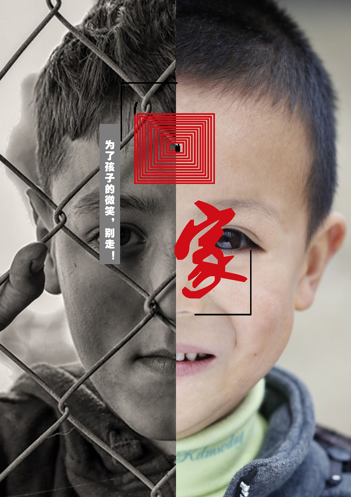
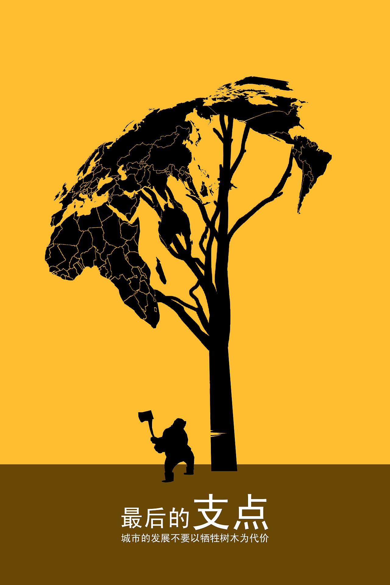

小郭の前端小窝

吾生也有涯，而知也无涯。—庄子
超感官世界
1.我伫立在温热的海滩, 迎着淡淡海腥味的晚风, 搜集着深蓝的幻想, 双眼在记录, 脑海却在遗忘, 海是触手可得的蓝天, 心是深不见底的汪洋, 我看见海滩留不住潮汐, 也听见海风歌唱着浪花的不舍, 对于我们这些平凡的生命来说, 能否赢得别人的喝彩并不重要, 只要能在我们生活与生存的空间里, 大部分人能容纳你接受你, 小部分人能善待你喜欢你, 有那么几个人能真的比你牵挂你, 这便是幸福的人生了。
2.时间已同样的方式流经每个人 而每个人却以不同的方式度过 就像旅行 是在寻找新的美丽 追逐新的感官世界 丢掉多余的自我 遇上最真实的自己 正是这自由散漫的风景 能治愈我一天的坏心情 晒晒心灵 继续出发 善待自己 不负韶华
3.请保留一份单纯 使你多一份与人的友善 少一些心灵的冷漠麻木 请保留一份单纯 使你多一份人生的快乐 少一些精神的衰老疲惫 请保留一份单纯 使你多一份奋进的力量 少一些故作高深的看破红尘 不为模糊不清的未来担忧 只为清清楚楚的现在努力 宽容他人对你的冒犯 不要无缘无故的嫉妒 不要看我失去什么 只看我还拥有什么 用最放松的心态对待一切困难 加油少年
4.秋天的风总是带着几分思绪， 有落叶对树梢的不舍， 也有候鸟对南方的期待， 脑海里回荡的是春天种下的烦恼， 还是夏天回响的喧嚣， 无论是什么， 到了秋天， 就像落叶一样随风坠落， 就像凉风一样不着痕迹， 当你放下无力改变的曾经， 才会腾出拥抱幸运的双手， 才会睁开看见前路的双眼
5.偶尔能听见风 他摇曳着枝叶沙沙作响 弹奏了一首晴空是私语 有时能看见风 他拉着白云的手轻声慢步 在天边描绘出一幅洁白的画卷 白云缱绻 任由风塑造形状 让阳光决定去留 与其站在原地等风 不如打开心扉随风去 也许人的一生根本没有目的地 亦或是飘到哪里便是哪里 风的洒脱 云的温柔 如果可以，多想乘着白云去见你 或是让风带走我的心意
6.总想把一切做到极致， 以至于忽略了过往的风景， 总想记住每片云， 结果失去了该有的心情， 抬头望天，云层每秒都在变幻， 落日的余晖也在逐渐黯淡， 所以请大胆告别吧， 告别昨日的委屈， 告别过去的不快， 大地是位长寿的智者， 阴晴让我们学会不再执着， 冷暖教会我们在人间清醒和随性， 即便夜幕降临， 也终会亮起人间烟火， 终会勾勒出光的希望～
7.我相信每个人 都会在某个本该入眠的夜里 让过去的画面在脑海里闪回 像一首老歌在思绪里单曲循环 坐上回忆的时光机，悉数过往的点点滴滴 赶上那趟思绪列车 沿着时间的轨迹一路向北 回到过去 一起看春天的花海 再吹吹夏天的风 闻闻秋天稻香 捡捡秋天的枫叶 踩踩冬天的千山万雪 这趟四季列车的目的地在千里之外 没有人知道那是天涯还是海角 只知道那地方很远 像是一片珊瑚海
8.这怠倦的柔亮席卷整个海面 咸腻的空气弥漫在被击碎的浪中 我愿随波而立 随波而行 随时空而变 伴海风而静坐黄昏 就像这温柔而细碎的光 盈耀在海平线 落在镶了金边的云层里 携着翩翩舞动迷人的色彩 映衬着 穿透着 缠绵云际 而这些遥远的梦 永远不会在生命中消逝 在属于你的天空里尽情翱翔吧
9.海上明月共此时，天涯何处寄相思 即使我们身在不同的地方 只要抬头仰望 都能看见同一片天空 同一个月亮 只叹息 清风明月易共适 高山流水固难求也 在我们共同拥有的夜空当中 唯有月光最温柔 她总会给人一种慰藉 照亮前行的路 此去经年 我们一起看天上的月 吹人间的风 过着最平凡的生活 但愿人长久 千里共婵娟 祝你相见的人总会相见 牵挂的人近在眼前
10.觉得孤独就对了 那是你认识自己的机会 觉得黑暗就对了 那是你发现光明的机会 觉得不被理解就对了 那是你认清朋友的机会 如果不快乐 就试着放弃一些想法 万事万物无非是一场演出 群山沙漠每一粒音符 都是宇宙之弦的颤动 不必抱怨生活给予太多的磨难 不必抱怨生命中有太多的曲折 如果沙漠失去了风沙狂舞 就失去了原本的壮阔 而生活本就是由一条炽热的煤炭 所铺成的环形道路
11.太阳每天从一个地方升起 但人生不能总在一个地方徘徊 生命就像一场一个人的旅行 大多时候要面对的只有自己 即使身在繁华的闹市 也无法阻挡内心的孤独 浓雾掩盖夜的悲凉 匆忙也只是敷衍的伪装 当繁华落尽 千帆远去 秋风拨动海浪 夕阳染红了半边天 这一切是否能够唤起你心底的柔软 感受大海的心跳 张开双臂和晚风拥抱 伫立海边 思绪万千 做一个安静的人 学会和自己和解
12.世界回向那些有目标和远见的人让路 人生如负重前行，千万不要着急 时间让人冷静，让人清醒 时光流转，没有哪种心情能永恒不变 生命平静流逝，没有声响，没有浪花， 甚至连波纹也看不见 寂寞时还想到别人，孤独时便只剩下自己， 别让长空照亮你的往事，毕竟这世界早晚都是你的 当太阳渐渐的没落，你要学会点燃属于自己的灯火， 不求照亮他人，只求温暖自己


 地址:河北省沧州市黄河西路49号
邮编: 061001
地址:河北省沧州市黄河西路49号
邮编: 061001
 版权所有:©计算机系软件工程2102郭玉行
版权所有:©计算机系软件工程2102郭玉行
 QQ: 2649456896
QQ: 2649456896
 E-mile: gyh020815@outlook.com
E-mile: gyh020815@outlook.com
 电话: 17803107734
电话: 17803107734


 友情赞助一下
友情赞助一下